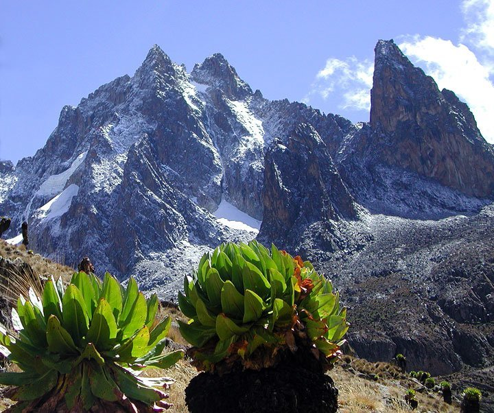

Welcome to Your Destination, a wonderful place with a rich history and breathtaking landscapes and wildlife. Kenya is an amazing country to visit! Its known for its stunning landscapes, diverse wildlife, and vibrant culture.
You can go on thrilling safaris in national parks like Maasai Mara, Amboseli and Tsavo. Dont miss the chance to see the iconic Big Five!
If you are a beach lover, Kenya's got you covered! The coastal region offers beautiful white sandy beaches and crystal clear waters.
You can relax in places like Diani Beach or explore the historical town of Lamu.
Kenya is also home to Mount Kenya, the second highest peak in Africa. If you're up for an adventure, you can hike to the summit and enjoy breathtaking views.
And let's not forget about the rich culture and traditions of Kenya.You can visit Maasai villages, learn about their life, and even participate in traditional dances.